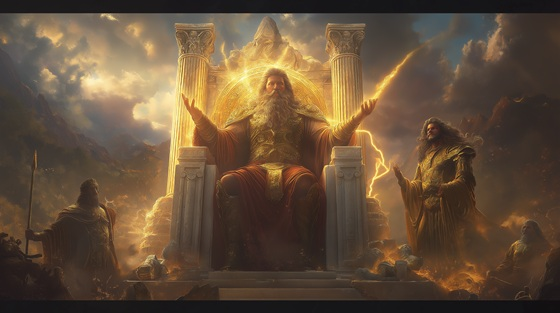

With the defeat of the Titans and the fall of Cronus, Zeus claimed dominion over the skies and became ruler of the cosmos. He and his siblings divided the realms: Zeus took the sky, Poseidon the sea, and Hades the underworld. The era of the Olympians began.
Unlike the Titan regime, the new divine order was built on a fragile unity, shaped by shared rebellion and bloodshed. But even as Olympus rose, the seeds of future conflict were buried in its foundation—jealousy, prophecy, and power never rest for long.
This moment marks the end of the Titanomachy and the dawn of Olympian rule, setting the stage for the myths of gods, mortals, and monsters that would echo through eternity.
The Reign Begins
The war is ash beneath my heel
The sky is mine, the oath is sealed
The stars I shattered now obey
The storm has carved a brighter day
Let Titans sleep in dark disgrace—
Olympus rises in their place
The reign begins, the throne is mine
Forged in war and fire divine
I hold the skies, I rule the flame
The world shall tremble at my name
Poseidon storms the ocean’s veins
Hades walks the silent plains
My sisters crown the winds and grain
And I command both death and rain
The wheel has turned, the fates aligned—
Their chains undone, their will entwined
The reign begins, the throne is mine
Forged in war and fire divine
I hold the skies, I rule the flame
The world shall tremble at my name
I’ll cast the laws in marble light
I’ll judge the weak, empower right
But should the blood begin again—
Let gods beware their children’s pain
“Beware the fire you hold too tight…”
ZEUS: “Then let the world burn bright with might.”
The reign begins, the throne is mine
Forged in war and fire divine
The sky remembers every scar—
And now I wear them as my star
So write the myth, let legends run—
Olympus rises with the sun